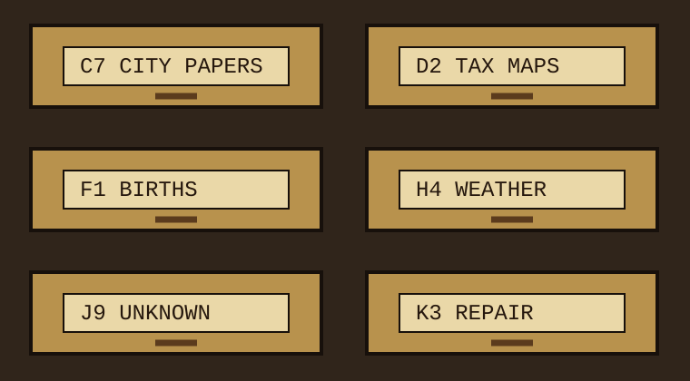

← microfiche room
Drawer C7 Label Sheet
Six drawers from a county library cabinet. The labels are not a map of knowledge; they are a map of who had time to type.
CABINET: OAK
LABEL STOCK: TAN
HANDLE: COLD
LABEL STOCK: TAN
HANDLE: COLD

C7
CITY PAPERS
CITY PAPERS
Observed order
| Code | Typed label | What was actually inside |
|---|---|---|
| C7 | CITY PAPERS | river edition clippings, ferry notices, alderman minutes |
| D2 | TAX MAPS | two maps, one menu, one coal receipt |
| H4 | WEATHER | barometer cards, flood crest pencil marks |
| J9 | UNKNOWN | empty tab dividers, all labeled "later" |
Concrete handling note: card drawers preserve sequence better than boxes because misfiling has friction. A wrong card meets a metal rod, a thumb, and a little embarrassment.
C7-A ferry
C7-B wharf
C7-C market
C7-D notices